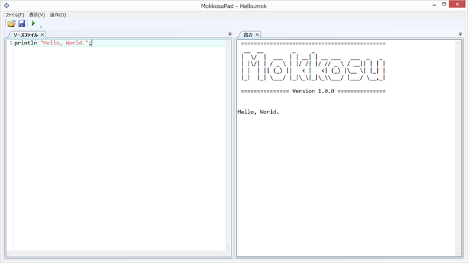

チュートリアル
ここではCやC#など、既存の言語を知っている人を対象に Mokkosuの解説を行います。 関数や変数、再帰といった概念を理解していることは 必要ですが、関数型言語の知識は仮定しません。
Hello, World.
始めに画面にHello, World.と表示するプログラムを作成します。
MokkosuPadを立ち上げて、ソースファイルペインに以下のプログラムを 入力してください。
msgbox "Hello, World.";
ツールバーの保存ボタンを押して、適当な場所にソースコードを保存してください。 ツールバーの緑色の三角を押すと以下のようにメッセージボックスが表示されます。

メッセージボックスを利用するのではなく、画面右の出力ペインに
文字列を書き出すこともできます。
その場合は、msgboxの代わりにprintlnを使います。

プログラムのコンパイル
プログラムをコンパイルすると、Mokkosuがインストールされていない 環境でも動作するEXEファイルを出力できます。
プログラムをコンパイルするには[操作]メニューから[コンパイル]を 選びます。
プログラムはデフォルトの状態ではウインドウアプリケーションとして
コンパイルされます。msgboxで表示を行う場合はこれで問題
ありませんが、printlnを使ったプログラムの場合、
表示が行わません。
プログラムをコンソールアプリケーションとしてコンパイルするには、
以下のようにソースコードの適当な場所に__define "CONSOLE_APPLICATION";
という行を追加します。
__define "CONSOLE_APPLICATION";
println "Hello, World.";
コメント
プログラムには自由にコメントを含めることができます。
Mokkosuのコメントは#で始まる単一行コメント
# 単一行コメント
と#[で始まり#]で終わる複数行コメントがあります。
#[
複数行コメント
#]
があります。以下のように複数行コメントの開始を単一行コメントで コメントアウトすると、一時的に複数行コメントを無効にできます。
##[
ここはコメントではない。
#]
変数
変数を使うと、値に名前を付けることができます。
値に名前を付けるには、let文を使います。
以下のプログラムではlet文を使って、文字列"Hello, World."に
messageという名前を付けています。
let message = "Hello, World.";
msgbox message;
プログラムを実行すると画面にメッセージが表示されると同時に、 出力ペインに、
message : String
と表示されるはずです。
これは変数messageが文字列型であること、すなわち文字列値を
保持していることを表しています。
変数は一度値を定めると内容を書き換えることはできません。
しかし、同じ名前の変数を再定義することはできます。
以下のプログラムでは画面に"b"と表示されます。
let x = "a";
let x = "b";
msgbox x;
式の計算
例えば2 + 3 * 4などの式の値を計算して表示してみましょう。
以下がそのようなプログラム例です。
let v = 2 + 3 * 4;
msgbox (int v);
ここでintは整数値を文字列値に変換する関数です。
msgbox関数の引数は文字列である必要があるので、
このような変換が必要になります。
上のプログラムを実行すると出力ペインに、
v : Int
と表示されるはずです。これは変数vの型が整数型、すなわち、
vは整数値を保持していることを表しています。
関数定義
関数を定義するにはfun文を使います。
以下は引数の値を受け取って2倍した値を返す関数doubleの定義です。
fun double x = x * 2;
上のプログラムに以下のような行を追加して実行すると、
画面に10を二倍した結果である20と表示されると思います。
msgbox (int (double 10));
再帰関数
関数定義では、定義の中で自分自身を再帰的に呼び出すことができます。 以下のプログラムではこの仕組みを使った、階乗を計算する関数の 定義例です。
fun fact n =
if n == 0 -> 1
else n * fact (n - 1);
以下の行を追加して実行すると5の階乗である120が表示されます。
msgbox (int (fact 5));
リストとパターンマッチ
リストは同じ型の複数の値をまとめたものです。